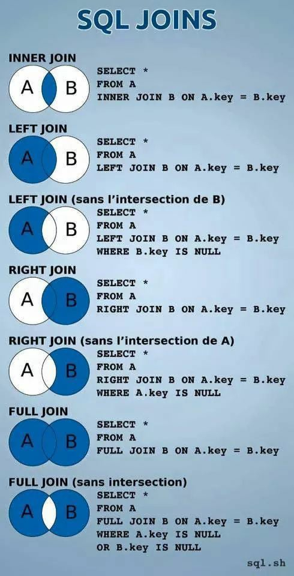

Quando criamos uma tabela em MySQL, nós temos que escolher uma coisa chamada engine, que é a máquina que vai criar os registros.
No final de um arquivo SQL você encontrará o engine:
engine = innodb
No caso, o Inno DB é uma máquina de criação de tabelas, ou seja, um engine (mecanismo). A principal característica do Inno DB é suportar chaves estrangeiras.
Outras engines são o MylSAM e o XtraDB. A MylSAM é a mais antiga, mas ela não dá suporte à algumas transações, no caso, as que são ACID, cujo significado são esses:
No exemplo, temos dois bancos de dados distintos, que tem relacionamento entre si, no primeiro, dados de usuários no banco "gafanhotos", e no outro banco temos cursos. Mas no caso especificado, um usuário do banco gafanhotos poderá escolher um curso do banco cursos.
No exemplo da imagem, Gafanhotos prefere Cursos, o Gafanhotos é o lado 1, se invertesse, como Cursos é preferido por gafanhotos, Cursos seria o lado um (quem exporta é o lado 1, quem importa é o lado "N").
O que a gente tem que fazer a chave (como a primária) do lado um (do qual ela vem) e levar para o lado "N", adicionando-a no outro lado, ela não precisa ter o mesmo nome da chave primária de onde ela veio, mas tem que ter o mesmo tipo e mesmo tamanho.
No exemplo, a chave idcurso do Cursos terá o nome de curso preferido na chave estrangeira Gafanhotos:
use cadastro;
describe gafanhotos;
alter table gafanhotos
add column cursopreferido int;
Para adicionar uma chave estrangeira, logo após executar o código acima, você fará isso:
alter table gafanhotos
add foreign key(cursopreferido)
references cursos(idcurso);
No caso, o foreign key adiciona a chave, e o references é a tabela do qual ele será ligado (importado), o que tá entre parênteses é o nome das colunas respectivas. Dê um describe na tabela e verifique se a chave está como MUL (múltipla).
describe gafanhotos;
Vamos fazer um update num cadastro qualquer assim, por exemplo:
update gafanhotos set cursopreferido = '6' where id = '1';
Para fazer múltiplos updates, podemos procurar essa opção no próprio PHPMyAdmin e selecionar todos.
PS: Se tentar apagar uma chave primária que foi exportada pra outra tabela (ou seja, uma chave relacionada), ele não permitirá, por exemplo, isso:
delete from cursos where idcurso = '6';
Caso queira apagar uma chave estrangeira, faça assim:
alter table gafanhotos
drop foreign key gafanhotos_ibfk_1;
alter table gafanhotos
drop index cursopreferido;
PS: O método acima também serve para excluir outros tipos de índices, como primary_key, unique, etc.
Para aparecer um outro dado da tabela (que não seja a chave primária, mas outro dado referente à ela), usaremos o join.
No banco cadastro, digite isso:
select gafanhotos.nome, gafanhotos.cursopreferido, cursos.nome, cursos.ano
from gafanhotos join cursos;
PS: O que tiver com ponto, o do lado direito é o nome da tabela e do esquerdo, nome da coluna.
No comando acima, dará um erro, pois ele juntará todos os curso, mas para corrigí-lo, usaremos um filtro no join, colocando logo após tudo, a ligação com on as duas tabelas e bancos respectivos, assim:
select gafanhotos.nome, gafanhotos.cursopreferido, cursos.nome, cursos.ano
from gafanhotos join cursos
on cursos.idcurso = gafanhotos.cursopreferido;
PS: Isso daí só mostrará os que tem dados referentes nas chaves estrangeiras. Também podemos usar inner join nesse caso.
Para ordenar, basta apenas isso:
select gafanhotos.nome, cursos.nome, cursos.ano
from gafanhotos inner join cursos
on cursos.idcurso = gafanhotos.cursopreferido
order by gafanhotos.nome;
Também podemos usar "apelidos" para as tabelas ou colunas com o parâmetro as, dessa forma:
select g.nome, c.nome, c.ano
from gafanhotos as g inner join cursos as c
on c.idcurso = g.cursopreferido
order by g.nome;
No geral, o Inner Join não considera cadastros que não tem ligação com chaves estrangeiras. Para tratar estes, usamos o left join, dessa forma:
select g.nome, c.nome, c.ano
from gafanhotos as g left join cursos as c
on c.idcurso = g.cursopreferido;
No caso acima, o left join escolhe a tabela preferencial, que no caso seria a esquerda (esquerda quem exporta, direita quem importa), não considerar nenhum é o inner. Na verdade, existem várias formas de trabalhar com o join.
O inner join retorna os registros que são comuns às duas tabelas. É o método mais conhecido:
select * from gafanhotos inner join cursos on gafanhotos.cursopreferido = cursos.idcurso;
O left join retorna todos os registros que estão na primeira tabela (a), além dos que são comuns com a segunda tabela (b):
select * from gafanhotos left join cursos on gafanhotos.cursopreferido = cursos.idcurso;
O right join retorna todos os registros que esão na segunda tabela (b), além dos que são comuns com a primeira tabela (a):
select * from gafanhotos right join cursos on gafanhotos.cursopreferido = cursos.idcurso;
O left excluding join retorna todos os registros da primeira tabela (a), desde que não sejam em comum com a segunda tabela (b):
select * from gafanhotos left join cursos on gafanhotos.cursopreferido = cursos.idcurso where cursos.idcurso is null;
O right excluding join retorna todos os registros da segunda tabela (b), desde que não sejam em comum com a primeira tabela (a):
select * from gafanhotos right join cursos on gafanhotos.cursopreferido = cursos.idcurso where gafanhotos.cursopreferido is null;
Veja abaixo um exemplo gráfico das SQL Joins:
PS: Não é possível usar full join ou full outer join em MySQL, mas ele existe em outros bancos baseados em SQL.
Como visto anteriormente, cada gafanhoto preferiria um curso, trazendo a chave primária de cursos para gafanhotos com a chave estrangeira.
Nesse novo exemplo, vários gafanhotos podem ver vários cursos. Nesse caso, o "N" (que ficava em ambos os lados), ficará no meio, e o "Assiste" será um nova entidade, e terá um "1" entre as entidades, assim:
No caso acima, o "Assiste" receberá duas chaves estrangeiras, que serão as primárias de gafanhotos e cursos.
Para isso, crie uma nova tabela com esse nome, assim:
create table gafanhoto_assiste_curso (
id int not null auto_increment,
data date,
idgafanhoto int,
idcurso int,
primary key(id),
foreign key(idgafanhoto) references gafanhotos(id),
foreign key(idcurso) references cursos(idcurso)
) default charset = utf8;
PS: Nem toda chave estrangeira precisa ser do tipo INT, apenas ser do mesmo tipo da chave primária.
Entenda primeiro a ligação que iremos fazer:
No caso acima, vários cursos estão sendo assistido por várias pessoas.
Vamos normalmente cadastrar isso na nova tabela, como novos cadastros, assim:
insert into gafanhoto_assiste_curso values
(default, '2014-03-01', '1', '2'),
(default, '2015-12-22', '3', '6'),
(default, '2014-01-01', '22', '12'),
(default, '2016-05-12', '1', '19');
PS: O default é onde será gerado um dado automaticamente (id).
Para sabermos quais cursos os alunos estão fazendo na tabela do meio, precisamos fazer as junções, dessa forma:
select * from gafanhotos g
join gafanhoto_assiste_curso a
on g.id = a.idgafanhoto;
Podemos fazer a filtragem do que desejamos ver também:
select g.nome, a.idcurso from gafanhotos g
join gafanhoto_assiste_curso a
on g.id = a.idgafanhoto
order by g.nome;
E para puxar o nome do curso, faremos assim:
select g.nome, c.nome from gafanhotos g
join gafanhoto_assiste_curso a
on g.id = a.idgafanhoto
join cursos c
on a.idcurso = c.idcurso
order by g.nome;
Uma exibição/visão (view) é uma tabela virtual baseada no conjunto de resultados de uma consulta SQL.
Ela contém linhas e colunas como uma tabela real, e pode receber comandos como declarações join, where e funções como uma tabela normal.
Mostra sempre resultados de dados atualizados, pois o motor do banco de dados recria os dados toda vez que um usuário consulta a visão.
Veja um exemplo de uso abaixo:
create view curso_2018 as select nome, descricao, totaulas from cursos where ano = 2018;
PS: Podemos usar várias combinações, baseadas no select que você deseja consultas, da forma que achar necessário.
E para visualizar a view, fazemos assim:
select * from curso_2018;
Veja outro exemplo mais complexo abaixo:
create view vis_users as select gafanhotos.nome as user, cursos.nome as curso
from gafanhotos inner join cursos on gafanhotos.cursopreferido = cursos.idcurso;
E depois:
select * from vis_users;
Com as visões, podemos criar códigos complexos e fazer a consulta das mesmas de forma bem mais simples.
Podemos também alterar as visões usando o alter, por exemplo:
alter view vis_users as select gafanhotos.nome as user, cursos.nome as curso, cursos.ano as ano from gafanhotos
inner join cursos on gafanhotos.cursopreferido = cursos.idcurso;
E para excluir, fazemos simplesmente assim:
drop view vis_users;
Podemos também usar outras combinações, como filtros e ordenações, ao criar as views, por exemplo:
create view alunos_2018 as select g.nome as user, c.nome as cursos from gafanhotos g
join cursos c
on g.cursopreferido = c.idcurso where c.ano = 2018
order by g.nome;